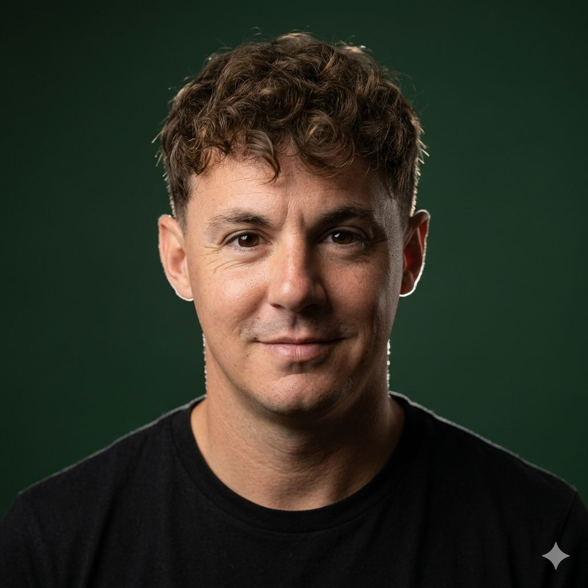

Architecting the artificial intelligence future
of the world's most powerful companies

Sebastian Vivares is not a consultant. He is an AI architect — a rare mind who operates at the intersection of deep technical mastery and executive-level strategy. Born in Buenos Aires, Argentina and educated across three continents, Sebastian has spent over a decade dismantling the gap between what technology can do and what business leaders dare to imagine.
His proprietary VIVARES Framework™ — a first-principles methodology for enterprise AI integration — has been adopted by organizations on five continents. It is not a theory. It is a battle-tested operating system for the AI era, refined across 320+ deployments ranging from Fortune 500 boardrooms to sovereign wealth funds.
"Most people see AI as a tool. Sebastian sees it as a new civilization layer — and he's helping the world's most powerful companies build on top of it."
When he is not advising C-suites, Sebastian writes, invests, and trains the next generation of AI-native leaders through his exclusive SEBUKI Mastermind program — a six-month intensive that has produced over 400 certified AI strategists.
From boardroom to build, Sebastian covers the complete spectrum of enterprise AI — strategic vision, technical architecture, organizational change, and measurable outcomes.
Sebastian pioneered enterprise-grade prompt engineering as a discipline. His systems extract precision, consistency, and commercial value from frontier models — at scale, across every department.
Learn moreEnd-to-end transformation engagements. Sebastian embeds with executive teams, maps capability gaps, builds the AI roadmap, and drives the human change required to sustain it.
Learn moreMulti-year AI strategy grounded in competitive reality. Sebastian identifies where AI will compress your margins and where it will explode your growth — before your rivals do.
Learn moreA trusted voice in the room where the most consequential AI decisions are made. Sebastian provides board-level perspective without board-level ambiguity.
Learn moreHelping companies build AI-first products that don't feel bolted on — but feel inevitable. From ideation to launch, Sebastian shapes the product thinking that competitors struggle to replicate.
Learn moreElectrifying keynotes for global stages — Davos, Web Summit, TED-style venues, and corporate summits. Sebastian makes AI intelligible, urgent, and actionable for every audience.
Learn moreFrom Silicon Valley to the Gulf, from Wall Street to Tokyo — Sebastian has been called upon by the organizations that shape the global economy.
Deployed an AI-driven client intelligence layer across a Tier 1 investment bank's private wealth division. Within 18 months, relationship managers doubled AUM growth using Sebastian's proprietary prompt systems and decision-support architecture.
Redesigned back-office operations for a Fortune 50 logistics company using agentic AI workflows. Eliminated 14 redundant processes, cut operational costs by 68%, and freed 2,400 employees to focus on high-value work.
Built a bespoke AI content architecture for a global media group. Content production velocity increased 9× while brand consistency improved significantly — measured across 22 languages and 140 markets.
Identified and neutralized a critical AI governance vulnerability in a top-10 pharmaceutical company's drug-discovery pipeline — preventing regulatory exposure estimated at $400M+ in potential liability.
"Vivares may be the single most influential voice shaping how corporate America thinks about artificial intelligence. His clarity is almost unsettling."
"The VIVARES Framework™ is what happens when a decade of real enterprise deployments collides with genuine intellectual rigor. Boards should read this."
"In a space crowded with charlatans and snake oil, Vivares stands apart — a practitioner who has earned the right to speak with authority."
"His approach to prompt engineering as a governance discipline is genuinely novel. Sebastian is solving problems that most AI labs haven't even named yet."
"When CEOs want to understand what AI means for their P&L next quarter — not in five years — they call Sebastian Vivares."
"Vivares doesn't sell AI optimism. He sells AI outcomes. That difference is everything — and it's why his client list reads like a who's who of global power."
"Sebastian didn't just advise us — he fundamentally changed how our executive team thinks about competitive advantage. Two years after our engagement, his fingerprints are still on every major AI decision we make."
"We hired Sebastian for three months. By month two we had extended to a year-long partnership. There is no one in the world who can take a boardroom from fear to conviction on AI the way he can."
"His VIVARES Framework™ is the most practical AI transformation methodology I've encountered in 25 years of enterprise consulting. It's rigorous, human-centered, and it works."
"I've seen a hundred AI consultants. Sebastian is the first who spoke to our engineers, our lawyers, our marketers, and our board — and made all four groups feel like he was speaking directly to them."
Sebastian's team responds to all serious inquiries within 48 hours. Whether you are exploring a long-term advisory relationship, a keynote engagement, or a corporate workshop — the conversation starts here.